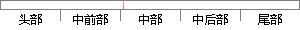

判断低字节的数据，如果低字节的数据大于等于0，则新生成的数为高字节的数乘256加上低字节的数， ；
片段位置图

相似结果|
相似片段 1：，则返回Ox03。程序首先判断输入的长度字节的高字节，是否大于等于1，如果是则表明超出256字节长度，为长帧不予发送。配置远程地址寄存器RSARl和RSAR0为发送缓冲区首址，数据长度存入远程字节数寄存器
相似片段 2：：(2)下一个有效页地址，占用一个字节：(3)该帧的帧长度值，此值包括目的地址、源地址、数据长度、数据和校验和，占用2个字节。如果接收到的帧长度加上留出的4字节空间大于256字节(一页)，那么DMA自动完成前向链接，以便于在下一页存放该帧的其余数据。
相似片段 3：功能函数成功时，判断请求字节计数是否在规定的范围内（大于 0X07且小于 0XF5），如超出范围内，则返回异常码 03（非法数据值）。如果正常会执行下一步，判断参量类型，文件号，记录数量和起始地址加上
相似片段 4：>；③加上这2个字节后的字符串就是译码后的数据；(6)非引号内的字串的text编码传入的数据：一个字串③判断传入字串的第一个字节，如果第一个字节为大于0x7f的字节，在传入的字节的前面插入一个值为0x7f的字节，否则保持原来的数据不变；④在出入字串的结束字节的后面加上一个值为Ox00的字节。
相似片段 5：最后的累积校验和加上分站输出口状态等于256的整数倍。由于在分站地址和帧类型中要进行判断，因此累积校验和中未包括这两项。地址字节后面的字节均是数据，其第9位为0，以下同。当主机上的参数发生修改时
相似片段 6：的数据等于后四个字节在读取到的数据，那么，说明缓冲区中为有效刷卡数据，如图4．7所示。缓冲B中的数掘剞‘算卡母：卡号，皑’璐+猎’蜗数据较验：如果犯观螂删蛳，鲻较骏礁功。图4．7卡号生成与读卡信息验证
|
※ 片段修改建议 ※
近似词参考：- 判断：判定 果断
- 如果：若是 假如 要是
- 等于：即是
- 新生：复活
- 生成：天生
- 加上：加之
系统自动生成语句：判定低字节的数据，若是低字节的数据大于即是0，则复活成的数为高字节的数乘256加之低字节的数， ；
注：本片段修改建议为系统自动生成，仅供参考。